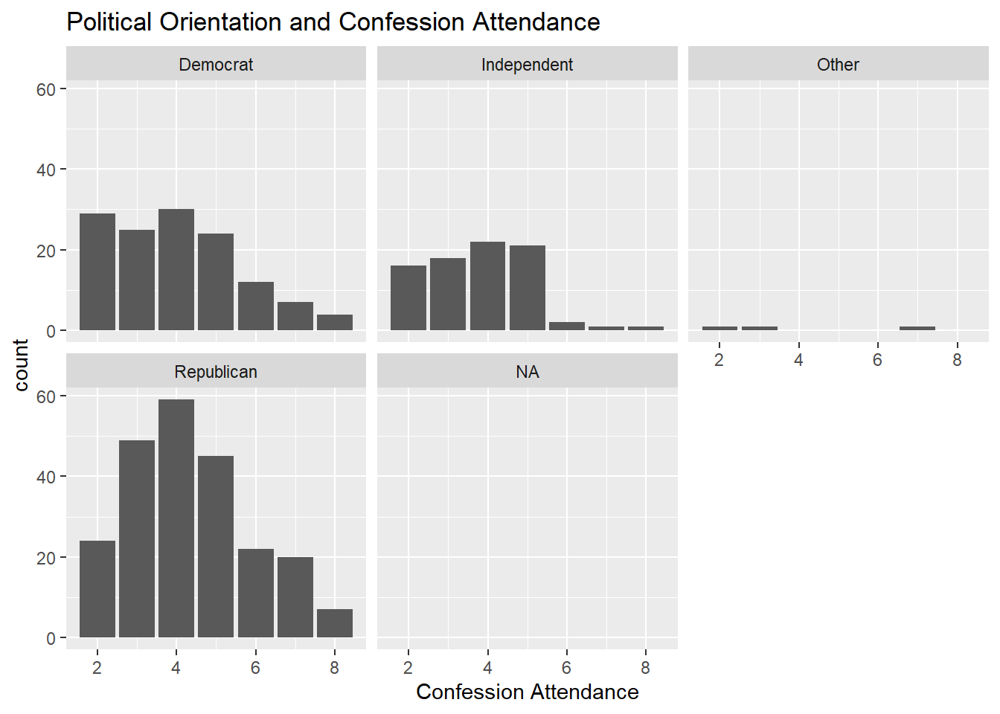
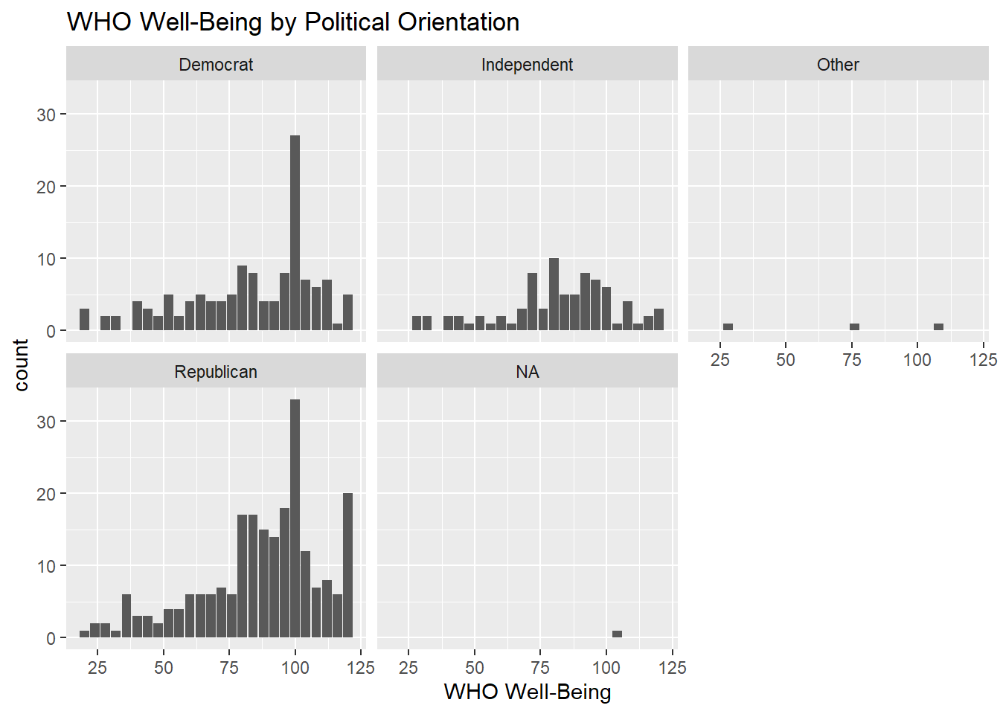
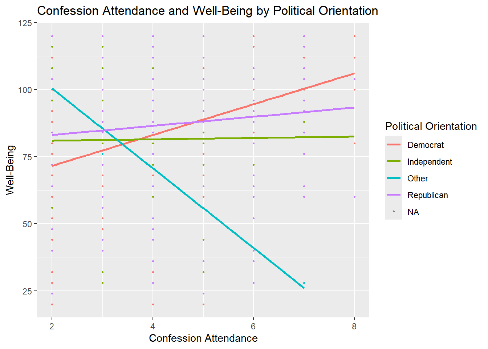
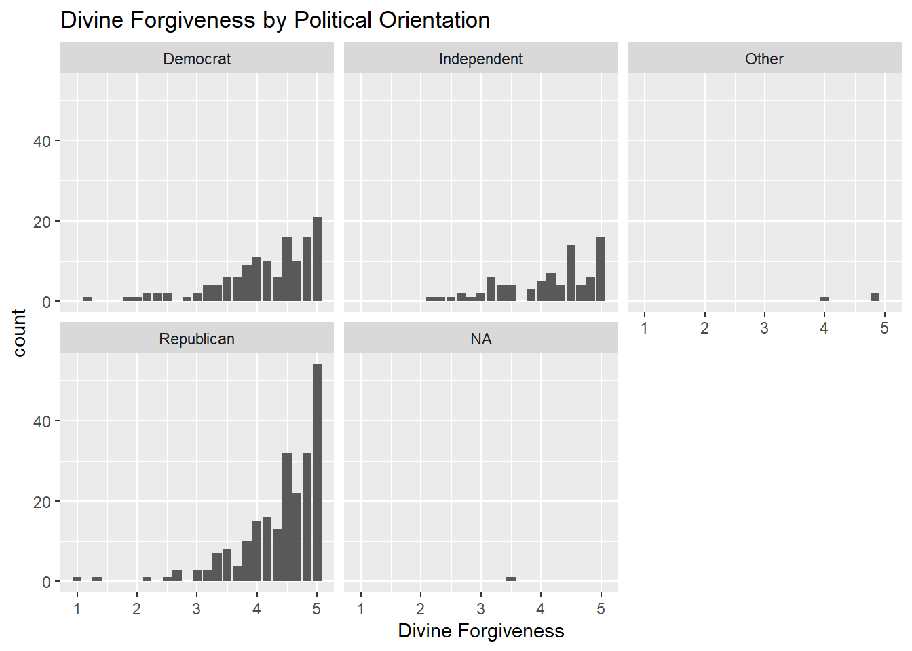
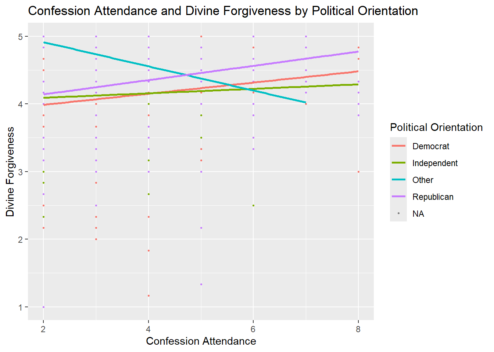

library(tidyverse)
library(tidyr)
library(haven)
library(forcats)
library(ggplot2)
confession <- read_sav("C:/Users/krysc/OneDrive/Desktop/Catholicism Study/with recode and UPDATED WHO WELLBEING SCORE scores.sav")MAIN QUESTION: WHAT ARE THE DIFFERENCES BETWEEN POLITICAL GROUPS IN A CATHOLIC SAMPLE ON VARIOUS OUTCOMES?
For this project, I will be examining the differences in well-being, confession attendance, and divine forgiveness across political orientation. I’m curious if well-being and divine forgivness differ across parties. I’m also interested in whether the relationship between attending confession and well-being and divine forgivness differs across political groups. To begin, I have read in my data from SPSS using the code from the “Import Dataset” tab and ran the packages I’ll need for my visualizations.
select(
confession,
RECODEConfAttend,
Q106
)## # A tibble: 442 × 2
## RECODEConfAttend Q106
## <dbl> <dbl+lbl>
## 1 6 2 [Republican]
## 2 6 2 [Republican]
## 3 6 1 [Democrat]
## 4 3 1 [Democrat]
## 5 2 1 [Democrat]
## 6 6 2 [Republican]
## 7 5 3 [Independent]
## 8 4 3 [Independent]
## 9 3 2 [Republican]
## 10 5 1 [Democrat]
## # ℹ 432 more rowsconfession <- confession %>%
mutate(
Q106 = as.character(Q106),
Poli_Orientation = case_when(
Q106 == "1" ~ "Democrat",
Q106 == "2" ~ "Republican",
Q106 == "3" ~ "Independent",
Q106 %in% c("4", "5", "6", "NA") ~ "Other",
TRUE ~ NA_character_
)
)ggplot(data = confession, aes(x = RECODEConfAttend)) +
geom_bar()+
facet_wrap(~Poli_Orientation, nrow = 2) +
labs(title = "Political Orientation and Confession Attendance",
x = "Confession Attendance")## Warning: Removed 1 row containing non-finite outside the scale range
## (`stat_count()`).
Here, I made a bar graph of people’s confession attendance and facet wrapped that to show the difference across political orientations. From the graph, it’s clear that republicans attend confession more often than democrats and independents.
ggplot(data = confession, aes(x = WHO_WELLBEING_Score)) +
geom_bar()+
facet_wrap(~Poli_Orientation, nrow = 2) +
labs(title = "WHO Well-Being by Political Orientation",
x = "WHO Well-Being")
Here, I made a bar graph examining people’s overall well-being scores on the World Health Organization well-being scale. Scores range from 0 to 120, where 0 is the worst imaginable well-being and 120 is the best imaginable well-being. Then, I wanted to know if there were differences in well-being between political orientations. Across all political orientations, it’s clear that most people are experiencing high levels of well-being. However, based on the visualizations alone, it’s clear that republicans reported higher well-being than democrats.
ggplot(data = confession, aes(x = RECODEConfAttend, y = WHO_WELLBEING_Score, colour = factor(Poli_Orientation))) +
geom_point(size = .5) +
geom_smooth(method = "lm", se = FALSE) +
labs(
title = "Confession Attendance and Well-Being by Political Orientation",
x = "Confession Attendance",
y = "Well-Being",
colour = "Political Orientation")## `geom_smooth()` using formula = 'y ~ x'## Warning: Removed 1 row containing non-finite outside the scale range
## (`stat_smooth()`).## Warning: Removed 1 row containing missing values or values outside the scale range
## (`geom_point()`).
Here I examine the relationship between attending confession and well-being and examine whether the relationship differs across political orientation. From the visualization, it’s clear that the relationship between attending confession and well-being is stronger for democrats compared to republicans and independents.ggplot(data = confession, aes(x = Divine_Forgiveness_Mean )) +
geom_bar()+
facet_wrap(~Poli_Orientation, nrow = 2) +
labs(title = "Divine Forgiveness by Political Orientation",
x = "Divine Forgiveness")
In this bar graph, I examine the distribution of participant’s feelings of forgiveness from God and facet those results by political orientation to gather whether one party experiences greater feelings of divine forgiveness compared to another. Looking at the visualization, it is clear that more republican participants reported higher levels of divine forgiveness compared to democrats and independents.ggplot(data = confession, aes(x = RECODEConfAttend, y = Divine_Forgiveness_Mean, colour = factor(Poli_Orientation))) +
geom_point(size = .5) +
geom_smooth(method = "lm", se = FALSE) +
labs(
title = "Confession Attendance and Divine Forgiveness by Political Orientation",
x = "Confession Attendance",
y = "Divine Forgiveness",
colour = "Political Orientation"
)## `geom_smooth()` using formula = 'y ~ x'## Warning: Removed 1 row containing non-finite outside the scale range
## (`stat_smooth()`).## Warning: Removed 1 row containing missing values or values outside the scale range
## (`geom_point()`).
This graph is looking at the relationship between attending confession and feelings of being forgiven by God. In my FYP, this relationship was statistically significant. Here, I’m interested visualizing the difference in this relationship across political groups. The relationship appears strongest for republicans but the overall trend for the three major political parties are the same. The ‘other’ group include people who did not respond to the question or answered other. There is clearly a ceiling effect in this relationship here.